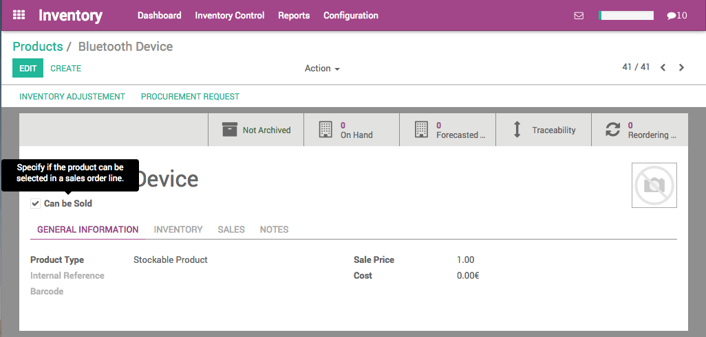
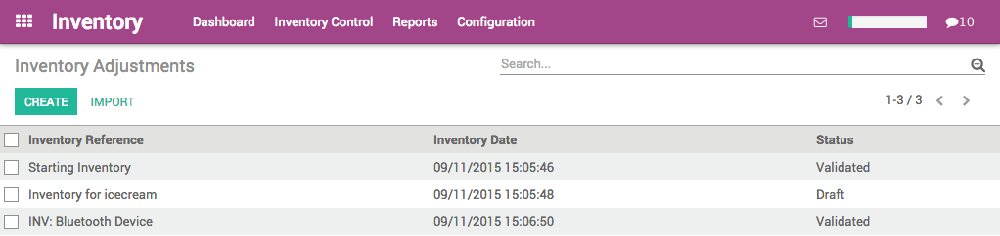
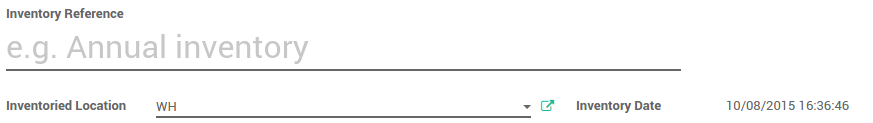
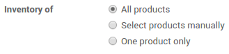

One of the most important feature in an warehouse management software is to keep the inventory right.
Once your products have been defined, it is time to make your initial inventory. You will reflect reality by inventorying the right quantities in the right locations.
Product Configuration
In the Inventory module, open the , then click on Create to create a new product. Configure the product type so that it is Stockable and not a consumable.
Start the initial inventory
Update the product quantity for one product
In the product you just created, you can see in the upper tiles that we have 0 product On Hand. Click on the Update qty on Hand button.
A new window opens. In the New Quantity on Hand field, type the quantity of product you currently hold in stock, then click on Apply.
Tip
if you are using multiple locations for your warehouse, you will be able to set the location of your product from this screen.
You can now see from the On Hand tab that the quantity has been updated.

Now, if you check the Inventory Adjustments in the Inventory Control menu, you will see that a new line named "INV: (name of your product)" has automatically been created and validated by the system.
Multiple products at once
Create all the products for which you want to follow the stock (as stockable products). Once the required products in stock have been defined, use an initial inventory operation to put the current quantities into the system by location. Go to to start your initial inventory.
Give it a name (for example Initial Inventory) and select the stock location of your inventory. Note that when you select a parent location (such as Stock, which might be split into sub locations), you can also select the sub (or child) locations.
You can choose between making an inventory for all products, for a few or only for one. In this case, we choose the All products option.
Tip
If you need your stock valuation to be done in a different period than the one that will be selected by default according to the inventory end date, enter the corresponding accounting period in the Force Valuation Period field. The accounting module needs to be installed.
Click the Start Inventory button. Depending on the type of inventory you have chosen (all products or selected ones) you might have to add products manually by clicking on Add an item.
Add the Real Quantity that you have in your stock for each product.
Tip
additional information will be available according to the options you activated (multi-locations, serial number, consignee stocks).
Click the Validate Inventory button to confirm the inventory and post it.
Reporting
To check the current stock, go to , and click on the list button: